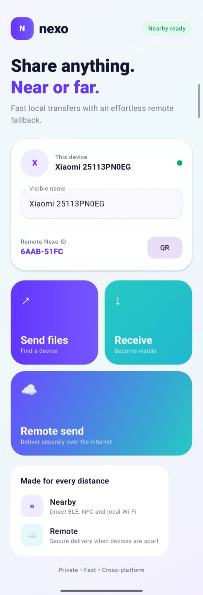
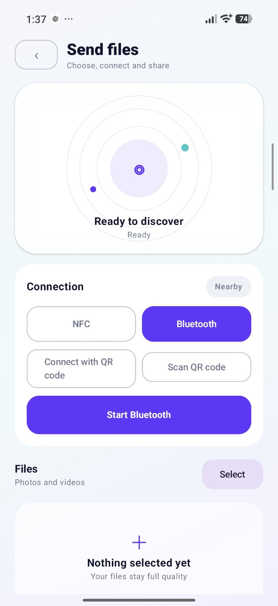
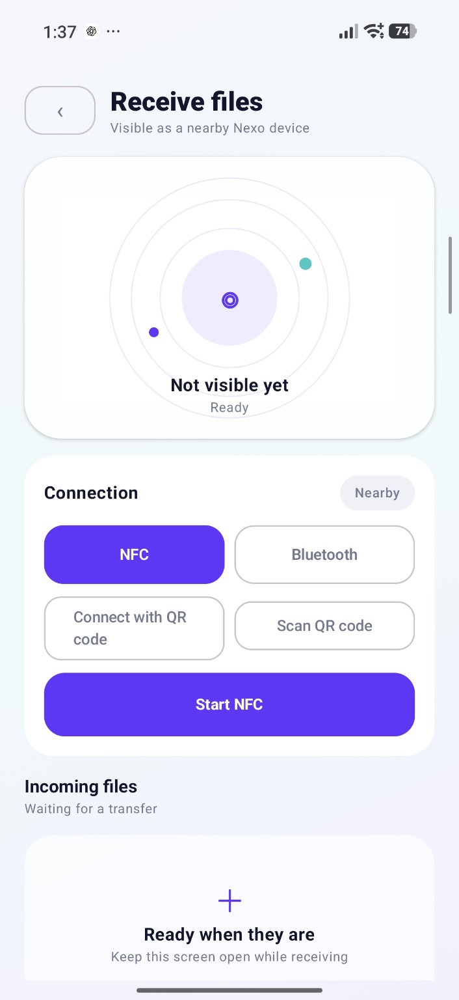
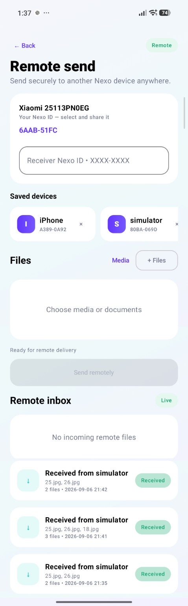
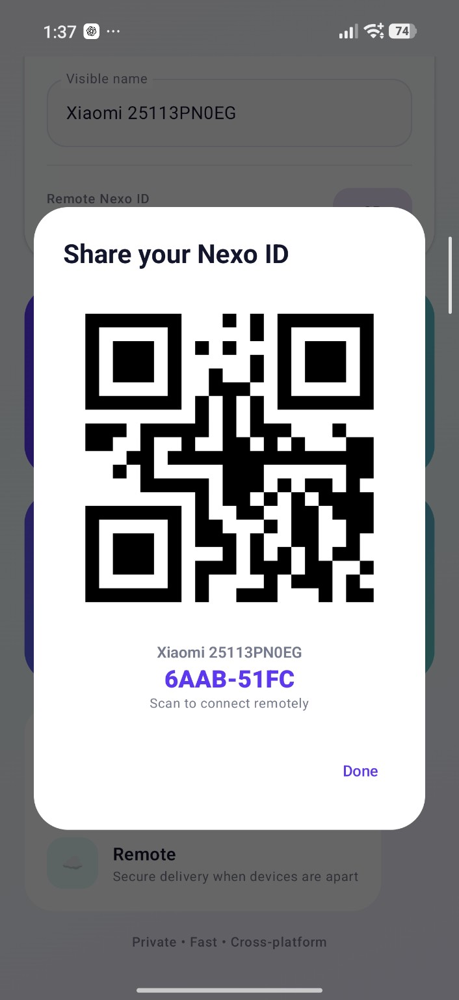

Device discovery
BLE-based discovery helps devices find each other while QR and NFC provide explicit, user-driven ways to initiate a connection.
A cross-platform file transfer experience for Android and iOS built around the idea that sharing should work whether devices are next to each other or far apart. Nexo combines nearby discovery and local transfer flows with a remote fallback and a shared Kotlin Multiplatform core.

Nexo treats nearby and remote sharing as two paths of the same product. A user can discover another device, connect directly and move files locally, or share a Nexo ID / QR code when the receiver is elsewhere. The UI keeps both flows approachable without exposing the transport complexity underneath.
BLE-based discovery helps devices find each other while QR and NFC provide explicit, user-driven ways to initiate a connection.
Local-network transfer is designed to move files without relying on an internet connection, with platform-aware host/client behavior.
A remote path uses device identities, saved devices and encrypted transfer support so sharing can continue beyond local range.
The product surface stays deliberately clear: choose Send or Receive, pick a connection method, select files and continue. Remote Send remains available as a separate flow, with a shareable Nexo ID and QR code for pairing.




The engineering challenge is coordinating discovery, connectivity, transfer state and platform differences without coupling the UI to one transport. The codebase is organized as a multiplatform application with feature-oriented modules and platform implementations where device APIs require them.
Nearby devices can advertise and scan with a Nexo service identity, while QR and NFC cover deterministic pairing scenarios.
The connection strategy can adapt to the participating platforms instead of assuming that every OS exposes the same networking primitives.
The remote-transfer feature includes anonymous sessions, device registration/resolution, saved remote devices and end-to-end encryption support.
See the rest of my work and technical background.